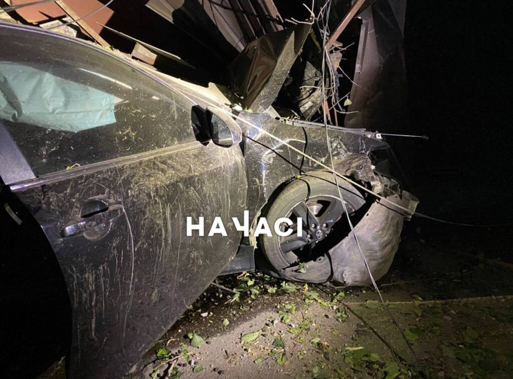
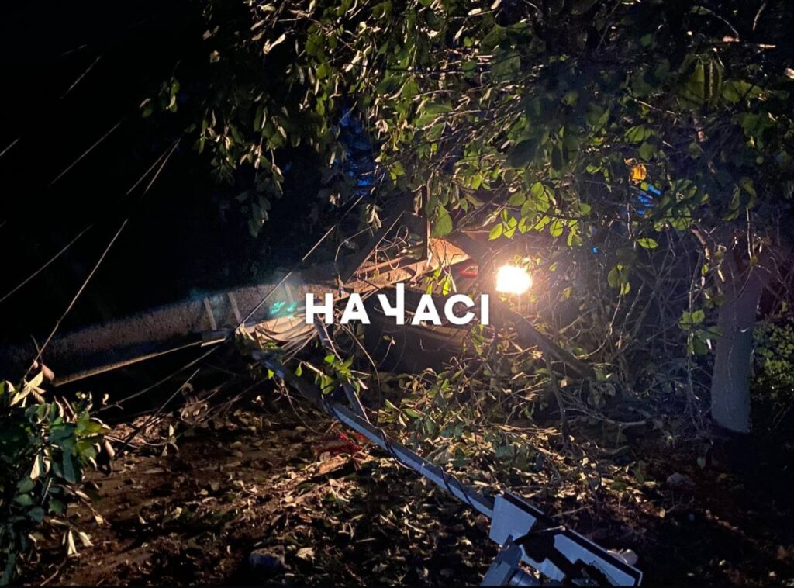
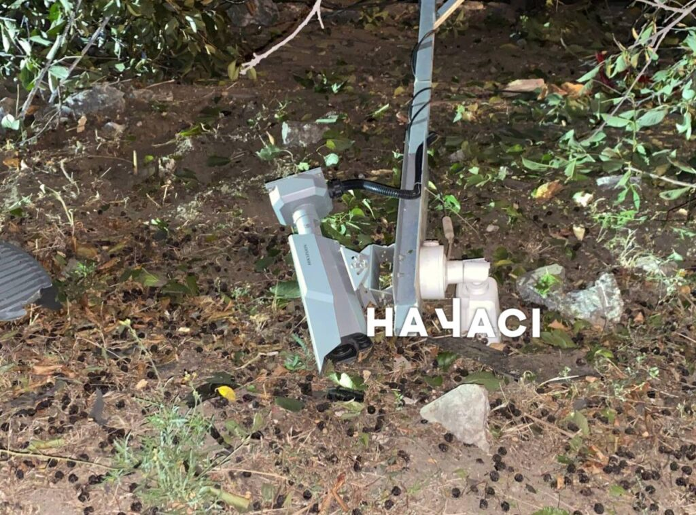
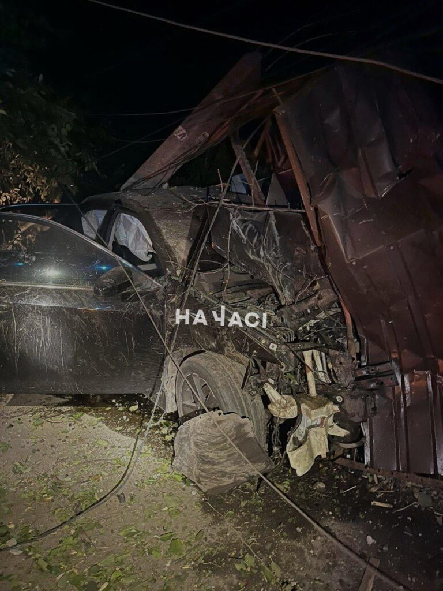

ДТП сталася ввечері 20 вересня. Toyota їхала на великій швидкості з Миколаївського шосе та на повороті на вул. Гете влетіла у будинок, повалила стовп та зупинилася у паркані.
Після зіткнення зі стовпом замкнуло електродроти, вони почали горіти, їх загасили вогнегасником. Через аварію прилеглі будинки залишились без світла, також ледь не згорів світлофор поруч.
Водія легковика затисло у машині, його деблокували та ушпиталили до лікарні. Окрім нього, в машині знаходились ще троє пасажирів, які дивом вціліли та відмовились від медичної допомоги.
Внаслідок ДТП рух через вул. Ньютона був повністю зупинений.
   